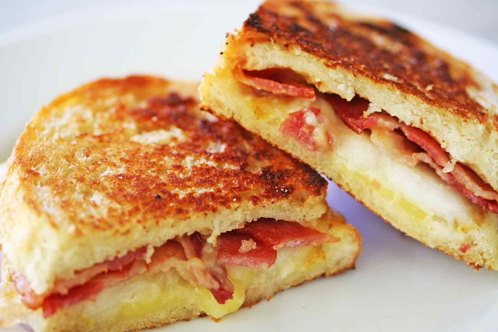

Description
This is my favourite type of grilled cheese. It has everyhting, bread, cheese, protein, and veggies!
This can be done with any cheese really but I call it the Tripple B because it is Bacon, Blue Cheese, and Broccolie. I do believe that Blue-cheese adds
best flavor for this recipes. So if possible I would stick with it.
Ingerdients
- Blue-cheese
- Bacon
- Broccoli
- Choice of Bread
- Butter
- A George forman grill
Steps
- Put the Bacon to cook in a pan at medium heat
- Right before it is crispy pull the bacon out and add chopped broccoli to the pan with the bacon grease
- Cook broccoli until almost burnt
- Assemble sandwich with cheese, bacon, and broccoli
- Butter outside of the sandwich and put in George foreman grill
- Coook until bread is brown and cheese is melted around 5-10 min and Enjoy!
